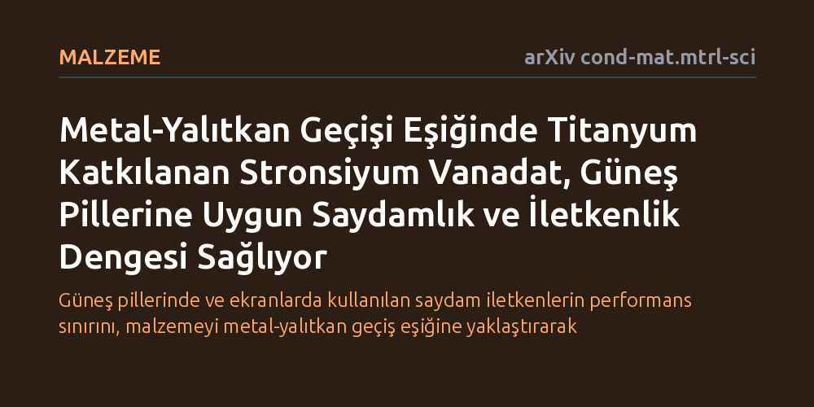

MALZEME · arXiv cond-mat.mtrl-sci · 2026-10-16
Araştırmacılar, stronsiyum vanadat kristaline titanyum katarak saydamlık ve iletkenlik dengesini metal-yalıtkan geçişi eşiğinde optimize etmeyi denedi. Bu yöntemle saydamlık aralığı silisyum güneş pillerine uygun biçimde genişletildi ve en yüksek verim metalik sınırın hemen yakınında yakalandı.
Güneş pillerinde ve ekranlarda kullanılan saydam iletkenlerin performans sınırını, malzemeyi metal-yalıtkan geçiş eşiğine yaklaştırarak aşabileceğimizi gösteriyor.

Akıllı telefon ekranlarından güneş panellerine kadar modern optoelektronik aygıtların vazgeçilmez bir bileşeni vardır: hem ışığı geçiren hem de elektriği ileten saydam iletkenler. Ancak doğada bu iki nitelik birbiriyle doğrudan çelişir. Metaller serbest elektronları sayesinde elektriği çok iyi iletir fakat aynı elektronlar ışığı yansıttığı için opaktır. Cam gibi saydam malzemeler ise elektronları sıkı bağlı olduğu için elektriksel iletkenlik gösteremez.
Günümüzde bu dengeyi sağlamak için kullanılan standart malzemeler artık fiziksel sınırlarına yaklaşmıştır. Elektronların birbirini güçlü biçimde etkilediği korelasyonlu oksitler, dar enerji bantları sayesinde görünür ışığı soğurmadan elektrik iletme imkânı sunarak umut vaat etmektedir. Ancak bu malzemelerde de geçirgenlik ve iletkenlik, taşıyıcı elektron yoğunluğu üzerinden birbirine bağlı kalmaya devam etmekte, birini artırırken diğeri hızla düşmektedir.
Araştırmacılar, bu kilitlenmeyi aşmak amacıyla fiziğin temel olgularından biri olan metal-yalıtkan geçişini bir malzeme tasarımı ilkesi olarak kullanmayı önerdi. Bir malzemenin elektrik ileten metalik durumdan akımı kesen yalıtkan duruma geçtiği bu kritik sınır, elektronik yapının hassas biçimde ayarlanmasına zemin hazırlamaktadır.
Deneylerde model platform olarak stronsiyum vanadat (SrVO3) kristali seçildi. Araştırma ekibi, laboratuvarda atomik tabaka kontrolüyle ürettikleri epitaksiyel ince filmlerde vanadyum atomlarının bir kısmını titanyum ile değiştirerek elektron doluluk oranını adım adım kontrol etti. Bu sayede malzemenin hem ışık geçirgenliği penceresi hem de metalik iletkenlik özellikleri eşzamanlı olarak incelendi.
Yapılan ölçümler, titanyum miktarının artırılmasıyla malzemenin optik geçirgenlik penceresinin düzenli olarak genişlediğini gösterdi. Bu genişleme, malzemenin özellikle silisyum tabanlı güneş pillerinin ihtiyaç duyduğu spektral bölgelerde rahatça ışık geçirebilmesini sağladı.
Fakat bu saydamlık artışı tamamen bedelsiz gerçekleşmedi; malzeme yalıtkanlık sınırına yaklaştıkça taşıyıcı elektronların azalması ve yapısal düzensizlik, elektriksel iletimin zayıflamasına yol açtı. Saydam iletkenlerin toplam kalitesini belirleyen standart Haacke başarım katsayısı analizi, en verimli bileşimin tam da metalik durumun kaybolmaya başladığı bu sınır bölgesinde yakalandığını ortaya koydu. Bu noktada metalik taşıma zayıflasa bile Fermi enerji seviyesi yakınındaki spektral ağırlığın korunduğu tespit edildi.
Elde edilen sonuçlar, saydam iletken tasarımında malzemenin sadece sabit özelliklerine bağlı kalmak yerine, metal-yalıtkan geçişine olan yakınlığın genel bir mühendislik aracı olarak benimsenebileceğini kanıtlamaktadır. Elektron doluluğu bir ayar düğmesi gibi kullanılarak zıt iki fiziksel özellik arasındaki en verimli denge noktası bulunabilmektedir.
Bu yaklaşım, gelecekte daha verimli güneş panelleri ve gelişmiş şeffaf elektronik devrelerin geliştirilmesi için uygulanabilir bir fiziksel mekanizma sunmaktadır. Yine de yöntemin diğer oksit bileşiklerinde ve farklı üretim ölçeklerinde nasıl davranacağının kapsamlı şekilde test edilmesi gerekmektedir.